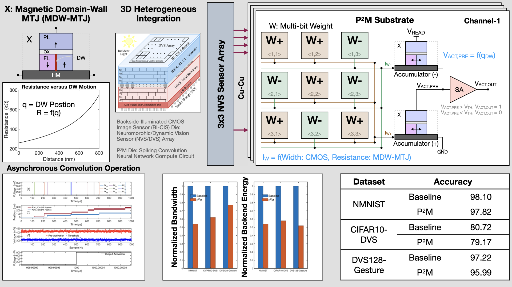
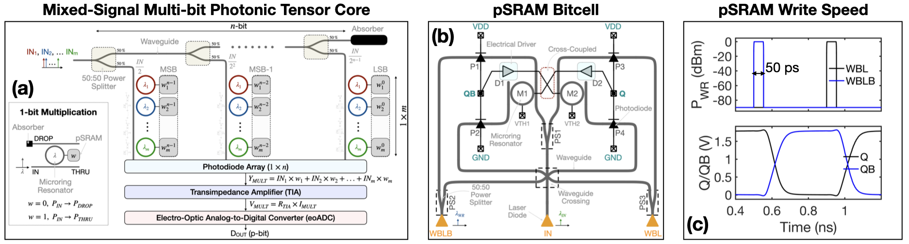

Research
Research Interests
- Analog and Mixed-Signal Circuit Design
- In-memory and In-sensor Computing
- Photonic Computing
- Neuromorphic Computing
- Device-Hardware-Algorithm Codesign
My research focuses on the co-design of hardware and algorithms for energy-efficient and scalable computing systems. I am particularly interested in advancing edge intelligence using emerging memory and photonic technologies, with emphasis on system-level integration of processing-in-memory and in-sensor compute paradigms.
Neuromorphic-In-Pixel Computing

Modern vision systems often rely on separate sensor and processor units, leading to significant energy and latency overheads during data transmission. This separation limits real-time performance and scalability, especially in edge AI applications where power and area budgets are tight.
We propose a hybrid CMOS+X neuromorphic processing-in-pixel-in-memory architecture integrating domain-wall magnetic tunnel junctions (MDW-MTJs) directly with CMOS transistors. This enables massively parallel, in-pixel processing of spiking CNNs through asynchronous, event-driven multiply-and-accumulate operations. Our design encodes weights using MDW-MTJ resistance states and transistor geometry, enabling programmable thresholds, long integration times, and energy-efficient computation. A 3D-stacked layout with fine-pitch Cu-Cu bonding allows dense vertical integration without area overhead.
This work demonstrates a scalable and efficient in-sensor computing approach, achieving near state-of-the-art accuracy on neuromorphic benchmarks while reducing backend processing energy by over 45%. It highlights the potential for smart sensors with embedded spiking neural inference.
For more details on the architecture, implementation, and evaluations, please refer to our published papers in Frontiers (2023), DAC (2024), and ICASSP (2024).
Photonic In-Memory Computing

In this project, we develop a photonic tensor core leveraging a mixed-signal photonic SRAM array. The architecture fuses analog photonic processing with novel electro-optic ADC techniques to enable high-speed, energy-efficient computing. Our system supports scalable tensor decomposition and convolution operations while drastically reducing memory bottlenecks typical in traditional von Neumann architectures. This work enables photonic accelerators for data-intensive AI workloads in high-throughput environments such as datacenters and optical networks.